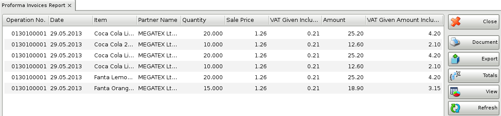

Proforma invoices report
The Proforma Invoices Report displays items included in proforma invoices. Each row in the report displays an item and its price, quantity, amount and date of the operation. You can use the report to track documents and you can filter the data by users, partners and dates. Each row in the proforma invoice corresponds to a row in the report.
In the first window of the report specify the filter criteria and the fields that will be visualized.
Only rows that are checked are visualized in the report.
You can choose a filter for each field by pressing the F4 key.
You can limit the report to a single criterion � for example, visualize received invoices for a particular supplier, or you can apply several criteria at a time � for example, visualize received invoices for a particular supplier from a particular location for a particular period of time.
To remove all specified filters, click the Clear button. The report will display all operations without any restrictions.
Click the OK button to generate the report using the specified criteria. Click Cancel to close the window.

Close button closes the report, Document button is used for report print preview, button Export to exports the report to CSV, Excel, Web Page or XML Data format and Totals button adds a line at the bottom of the window, that contains quantities and values amounts for each column.
�2006-2015 Microinvest, All rights reserved